Zen in the Art of Ping Pong The Animation
Table of Contents
Zen in the Art of Ping Pong The Animation
draft: v1.1 | posted: 5/2/2017 | modified: 5/6/2017 | confidence of success: 75% | estimated time to completion: December 31, 2017 | importance: Medium
Something that I've always found appealing about Ping Pong The Animation is how profoundly well-crafted it is, and how much it captures per unit time. It seems like almost every line has some meaning; as if every word, sound, and shot culminates in a single effect. Ping Pong is nothing if not utterly deliberate, from it's character design (Yurie is used to show Kazama's shirking of both his family and his love life) to it's art style (the abstract style allows for more dramatic exaggeration without breaking the immersion).
{kind=link}
Ping Pong the Animation, I think, may be one of the best mediums published in the last decade for understanding Zen Philosophy. This writeup assumes that you have already seen Ping Pong, and will talk about some basics of Zen as well as exploring the characters in Ping Pong and what they have to add.
I can't help but think that Ping Pong has more nuance to it than certain communities give it credit for - I often hear people say things like "I'm totally Peco," and otherwise latching onto specific characters' narratives in some way. This, I think, misses a lot of the reason why Ping Pong is so interesting, and sidesteps a great deal of the tangible, learnable things that can be taken away from this story.
Zen
On the Limits of Language: Becoming Purposeless, On Purpose
One of the most difficult points to grasp about Zen is this idea of "not thinking." People often confuse this idea with "autopilot" but I think that a more accurate way to describe this idea would be "without language."
Picture the following – you are Peco, and you are playing a table tennis match against Kazama. He hits the ball crosscourt, and you think "he hit the ball crosscourt, so I'm going to return the ball down the line." Having made this decision, you begin your swing, confusing everybody in the crowd, since the ball is 6 meters behind you by the time you finish this thought.
As a fun exercise, try reading aloud the sentence "he hit the ball crosscourt, so I'm going to return the ball down the line" to yourself, as fast as you can. Think about how much time it takes to say that complete thought aloud, and how much time you have, mid-match, to make such a decision. Maybe we can convert this to a single word, "HHTBCSIGTRTBDTL" (pronounced "huhut bik sig trot b'dittle"). Maybe this can shorten the time to say it somewhat, but it still kind of takes a long time.
In Computing, there's this idea of Bandwidth, which put simply is the amount of information possible to transfer over some medium in a given amount of time. Consider the bandwidth of the English Language - in the amount of time you have to react to Kazama's attack, how much information can you process with words?
With the power of science, we've actually managed to demonstrate that when you think or read words in your head, you actually make movements in your larynx to form those words. This silent speech, or subvocalization, is just how we manage our thoughts most of the time. It's a good part of how we store things in short-term working memory, via the phonological loop.
This whole idea of "purposelessness" I think becomes quite a bit easier to understand with this knowledge. Thinking words during your actions means that you have a buffer zone in between your perception and your action. Your thoughts should come in the form of whatever action you're performing, your inner "language" should be in entire actions of your skill. English doesn't have the information density to allow you to use it for these highly specialized tasks.
As such, your thoughts when processing information quickly can't be in English, due to subvocalization. You don't have time to think "Cross court left? I'll do a drive here" because by the time you get to "left" the entire action has already completed.
Daisetz uses swordsmanship to concisely illustrate this idea: "The secrets of perfect swordsmanship consist in creating a certain frame or structure of mentality which is made always ready to respond instantly, that is, immediately, to what comes from the outside. While technical training is of great importance, it is after all something artificially, consciously, calculatingly added and acquired. Unless the mind that avails itself of the technical skill somehow attunes itself to a state of the utmost fluidity or mobility, anything acquired or superimposed lacks spontaneity of natural growth." (ZITAOA pp.37)
In this way "conscious thought" is the enemy of your goal simply because with any degree of mastery your thoughts should not be in words but in actions. You should literally think in the language of your task, and let the decisions come to you rather than forcing things in this way.
Put another way, "Zen is not necessarily against words, but it is well aware of the fact that they are always liable to detach themselves from realities and turn into conceptions. And this conceptualization is what Zen is against… Zen insists on handling the thing itself and not an empty abstraction." (ZAJC, pp. 28). On a surface level, just think about the idea of "Forehand": it's a word that doesn't really refer to a single thing. We move around in three dimensions, and the conception of "Forehand" is just a broad class of things close enough to the same to refer to as a single category. But there are many possible forehands, with many possible paths, and thinking about it with language you're presented with this problem: Do you come up with a different word for each possible forehand (at the cost of coming up with countless words) or do you create broader categories at the cost of imprecision? Zen sidesteps this by sidestepping language altogether. "Zen Verbalism expresses the most concrete experience" (pp.28).
This, I think, is a lot of the non-mystic-mysticism that is everywhere in Zen – it's not so much that you can know something unknowable, as that would be literally impossible. But rather that you come to know something that cannot be precisely described by language. Zen deals with the elements of consciousness that cannot simply be taught but must be shown, which is why it's usually referred to in the language of "Training" rather than "Teaching". Satori, or Enlightenment, "must be the outgrowth of one's inner life and not a verbal implantation brought from the outside" (ZAJC pp.33). It's obvious how this can be applied to sport, or any physical skill - You cannot be enlightened by Zen through words any more than you can be taught proper running form by reading instructions.
"You can't learn this from watching it. It's not like a math test." (ep.11)

In this way I think a lot of people misinterpret Zen as being anti-intellectual or anti-science, but I don't think under this lens it shares any of the same qualities with Woo. Zen is less of a religion and more of a technique used to view things "directly" (insofar as our senses would allow), rather than making them pass through a conscious reality-mapping process. "If you want to see, see right at once. When you begin to think, you miss the point" (zajc pp.36).
The Art of Ping Pong
As an exploration of this sort, you notice throughout the story that different characters "get it" to different degrees, struggle with different things, and overall have pretty different experiences that all lead them down various paths. Almost all of the characters struggle with a different specific philosophical idea, and their stories are each reflective of overcoming that obstacle.
I think the easiest way to explain this is to explore each character individually, and, essentially, walk through the story several times through the eyes of each of them.
The Hero as the Quest for Enlightenment
Peco's journey is the most straightforward, and is the easiest to grasp from a philosophical perspective. Peco is on the quest for enlightenment, and the concept of "the hero" represents enlightenment itself. The parallels between this "hero" and satori are self-suggesting: the emphasis on chanting (Hero Kenzan), the hero "saving" Smile from the harsh world, etc.
Peco is the character with the most dramatic character development of all the characters, going from a relatively weak and obnoxious braggart to a focused, passionate player among the best in the world. As such, you get to clearly see his entire journey from start to finish - a journey illustrative of a wide sampling of concepts in East Asian philosophy.
Unknown Unknowns
I'm going to ask a question that may have not occurred to you when you watched Ping Pong for the first time. Rewatch the scene where Peco plays Kong for the first time:
Ask yourself the following:
"What did Peco do wrong?"
It's an interesting question, in hindsight. It's clear enough why he lost - Kong is in a league of his own and just completely and utterly outclasses Peco. But ask yourself what he really did wrong in this scene and it starts to become a little hazy. Peco correctly identifies everything that Kong is doing to defeat him, and tries to adapt to them after literally every point. Peco is paying attention, he's playing seriously, he's thinking, and more than anything else he seems to be demonstrating that he's actually a pretty decent player. Most people just watch this scene and think something along the lines of "Peco realizes that he sucks at Ping Pong" but that, I think, sort of misses the point.
Notice, specifically, that everything Peco does is narrated, out loud, to himself. All of his observations, all of his decisions, all of his predictions are said, literally, in his head as complete sentences (notice especially him dragging out the sentence "4000-year special" to be in sync with his actual swing, which ends up missing horribly).
A much more extreme example of this is the Beach Guy, who plays against Smile (ep 3). He writes out a plan, fully detailed, with a discrete endpoint where he simply doesn't have any idea what to do afterwards, and once he gets to that point he crumbles and starts thinking about how gloomy the world is. This sort of subvocalization is almost always an easy cue for someone in PPTA playing absolutely terrible, pretty much exclusively happening to the losing party (Peco vs Kong, Beach guy vs Smile, Kong vs Kazama, Sakuma vs Smile, even Kazama vs Peco). It's easy to point at Beach Guy and laugh at the absurdity of his actions, but his actions aren't much different from Peco's – they're just presented in a more funny way.
Kenshou
The beginning of PPTA, from Peco's perspective, is essentially his delusional self-obsession slowly but surely getting farther and farther from reality, going from a brazenly overconfident self-proclaimed ping pong prodigy to on the precipice of quitting the sport after losing to the guy who got crushed by Smile (as if that had any bearing on his value as a player).
When Peco dramatically snaps out of his delusions, he takes what ends up being a remarkably straight path towards mastery of the sport. Peco was on the verge of quitting table tennis forever, even after Sakuma saves his life and tells him not to quit. He is like this up until he sees the old picture of Smile, leading to an outburst where he shouts to Obaba
"Teach me the game from the beginning!"
From this point forwards Peco becomes the embodiment of Beginner's Mind, or Shoshin. He shows up to the training center wearing shoes with the word "Basics" on them and ends up completely discarding his old habits, completely adopting a new style. Adjectives commonly attached to Shoshin seem to fit Peco quite well - "openness, eagerness, and lack of preconceptions when studying a subject, even at the advanced level." (wikipedia).
{kind=link}
This part of the story serves as Peco's awakening. He hasn't quite reached enlightenment - he's no better at ping pong now than he was moments before, after all. But he's seen the path he needs to take, he's experienced this "Kenshou", literally "seeing essence". He's not yet a master, but he's started walking on the path that will let him slowly and consistently accumulate bits and pieces of masterness.
Satori
You see him slowly build up to it, but during his match with Kazama, Peco finally reaches his Enlightenment once and for all. At the start, it seems like Peco is going to be destroyed in straight sets. At the start of the third set Peco's coach says
"Don't think, Peco; you don't have the brains for it."
"…You know better."
"That's not your game."
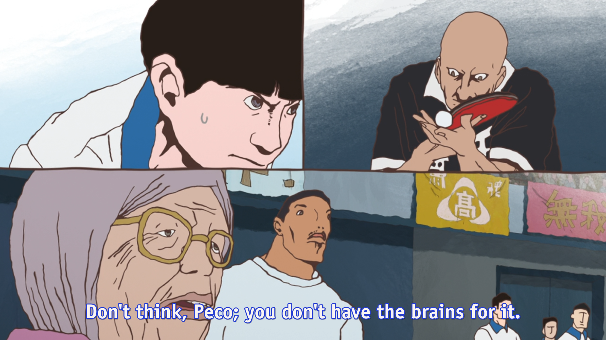 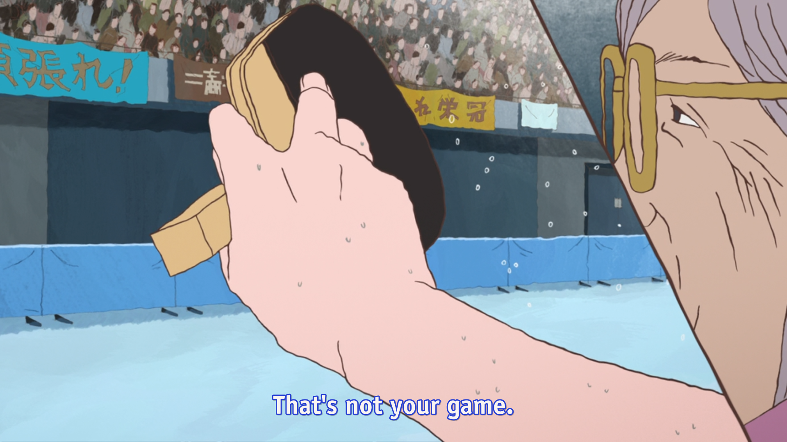
As we already know: when you begin to think, you miss the point. In the first two sets you get a simple illustration of Peco's forced, boxed-in conceptualization of the game through his thoughts. He can't see an opening through his explained-out mental version of the game, and he starts winning as soon as he abandons that in favor of just moving fast and doing what comes naturally. He enters what Japanese martial artists refer to as "Mushin" (or, "no mind"), in which he is able to move free from fear, ego, and judgement. "At this point, a person relies not on what they think should be the next move, but what is their trained natural reaction (or instinct) or what is felt intuitively." (wikipedia).
He's physically drawn differently, a white blur who looks almost floating moreso than running, enraptured in the kinesthetic sensation of the now. He stops thinking, he stops trying to win, and he places himself squarely in the present moment which allows him to completely turn the game around.
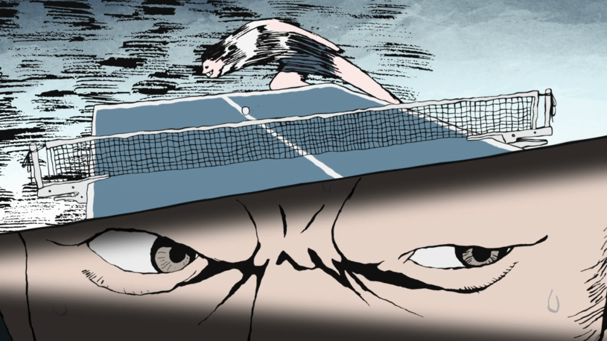 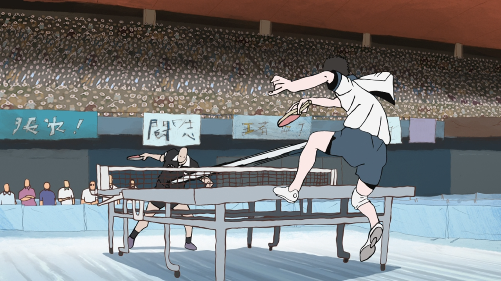
Notice the wing/cape-like paper on his back
"The hero transcends logic. The hero overturns what we thought we knew, and drives away the darkness. More than anything, he shines simply, brightly, and happily."
The finale between Smile and Peco seems almost out of place with regards to how the actual match is treated, relative to the other matches in the show. The score is a non-factor, and half of the match is replaced with a series of each character's childhoods to music with the lyrics "we are all alive". The match is completely colored white, as if nothing else even exists at all, both of their focus so tuned into the match that the entire world literally fades away. Smile seems to be smiling in every shot, everybody watching is enraptured, and Peco gets to show everyone how much he loves table tennis.
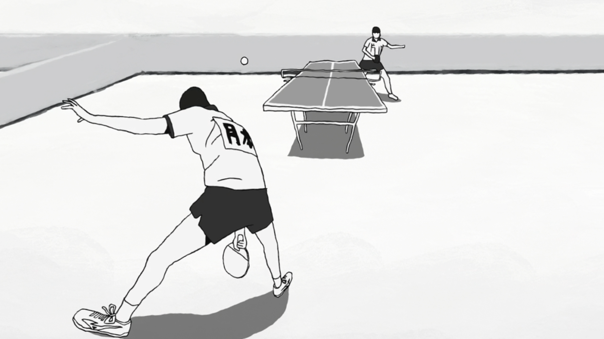
The Enlightened Roomba, and The Dreaming Butterfly
Smile is the character that reaches their apex earliest in the show, and starts out as the most talented. He initially struggles with his fondness for Peco, which ended up being a serious limit placed on his development, as he became much stronger than Peco and needed to pull his punches to "be like him."
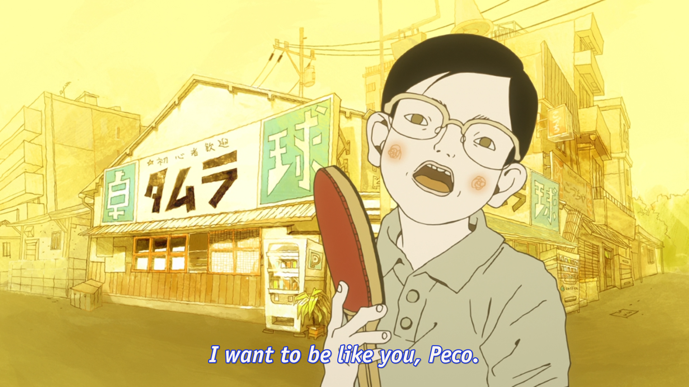
Smile is aided from the beginning by Koizumi, a former pro table tennis player nicknamed "Butterfly Joe". This is not subtle symbolism, and leads us straight towards the Zhuangzi, a founding text of Daoism (which would later influence Chan, or "Zen", Buddhism). The most famous story of the Zhuangzi is the Butterfly Dream, where Zhuang has a dream that he is a butterfly so vivid that when he awakens he is unsure if he is a man that dreamt of being a butterfly, or a butterfly dreaming of being a man. Butterflies are everywhere in PPTA, almost exclusively surrounding this part of the story, follow either Smile or Koizumi wherever they go.
{kind=link}
{kind=link}
{kind=link}
{kind=link}
Indeed, Smile and Koizumi's struggle is a Daoist one more than a Zen one, and a number of Smile's difficulty mirror themes present in Daoist texts.
This is a lot of the reason Smile clashes so hard with the Ping Pong world - it's not super compatible with his philosophy in general. Daoism teaches accepting death ("Ping Pong is just a way to kill time until I die"), distance from social obligation (Smile's specialty), and effortless action, or "Wu Wei", which entails acting without purposeful striving for gain. Hard to do in a zero-sum game like Table Tennis.
One of the more obvious tells to the link between philosophy and Koizumi is his match with Smile, where he forces Smile to abandon his reservation and really push himself. He's overjoyed that Smile finally understands, and in a moment of self-reflection says "You do not chase the ball, the ball chases you." This is so emblematic of East Asian philosophy that it's almost cliche - Herrigel in Zen in the Art of Archery mentions at one point "I learned to lose myself so effortlessly in the breathing that I sometimes had the feeling that I myself was not breathing but, strange as this may sound, was being breathed" (ZITAOA p.20). This is a reflection of the wordlessness mentioned earlier - having the trained response take over, to be able to control yourself without instructing your body with verbal signals, and to be so focused that it's almost mysterious-feeling where the instructions are coming from at all.
Another big theme in Daoism is "Wandering" or You, which is the virtue of wandering through life, enjoying it without purpose, and not overly attached to any part of it. This is a huge, HUGE theme in Smile's story, since from the start he tries to achieve this by becoming "a robot".
Smile's interaction with Peco (and by extension, the hero) are usually expressed through "the hero's theme", which is a plot point (Smile hums it to himself sometimes). You can see pockets of Smile's ultimate destination, and they're usually associated with this song. The most salient example of this is during his match with Kong (ep. 3), where he starts singing the hero's theme and just utterly crushes Kong, wordlessly and naturally. He gets pulled out of this dramatically when Kong's coach yells about Kong never returning home, Smile begins to pull his punches, and the soundtrack takes itself elsewhere. You'll notice, though, that this is almost the same scene as Peco vs Kazama in episode 10 - Smile goes down early, the soundtrack switches to the Hero's Theme, and Smile starts playing phenomenally well. The thing that separates these two matches is the ending - Peco stays focused through to the end whereas Smile allows the outside world to pull him away from his mindfulness.
His enlightenment finally comes when he breaks free from this robotic shell and is permitted to wander through life as a feeling, breathing human. You'll notice that even his racket becomes a "part" of him, as if his veins themselves flow into it.
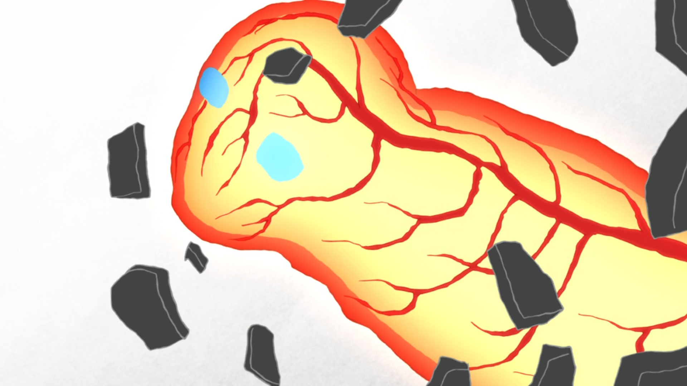 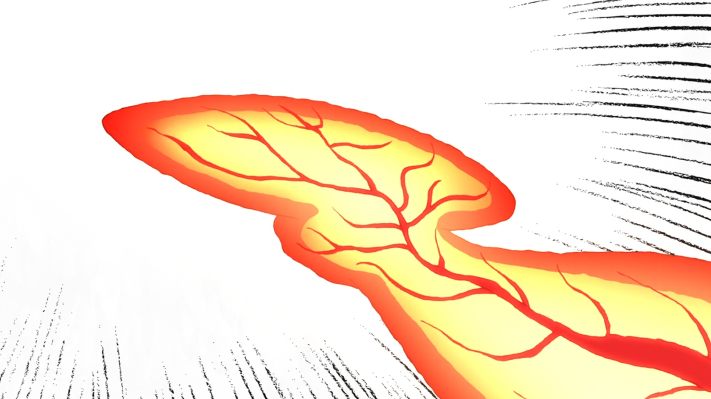
An important plot point is found in the lines used to break him out of pulling punches and to break him out of the robotic shell. When he plays Koizumi, the inner robot in him says "Blow him away", and at the end when he breaks out of the robot and emerges as a living being, he hears Peco say the same thing
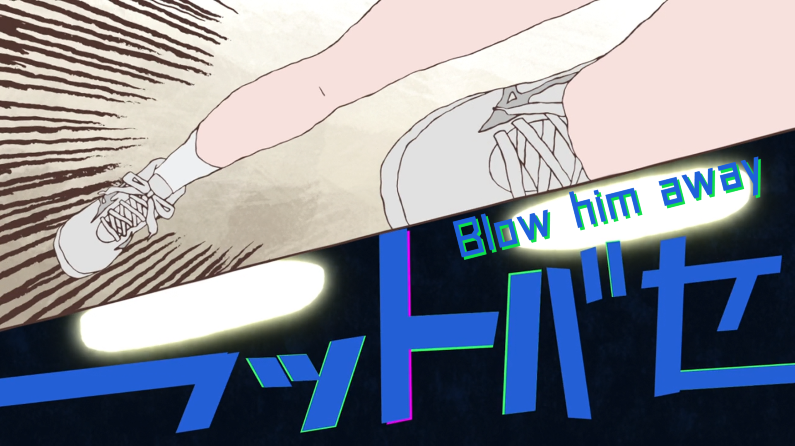 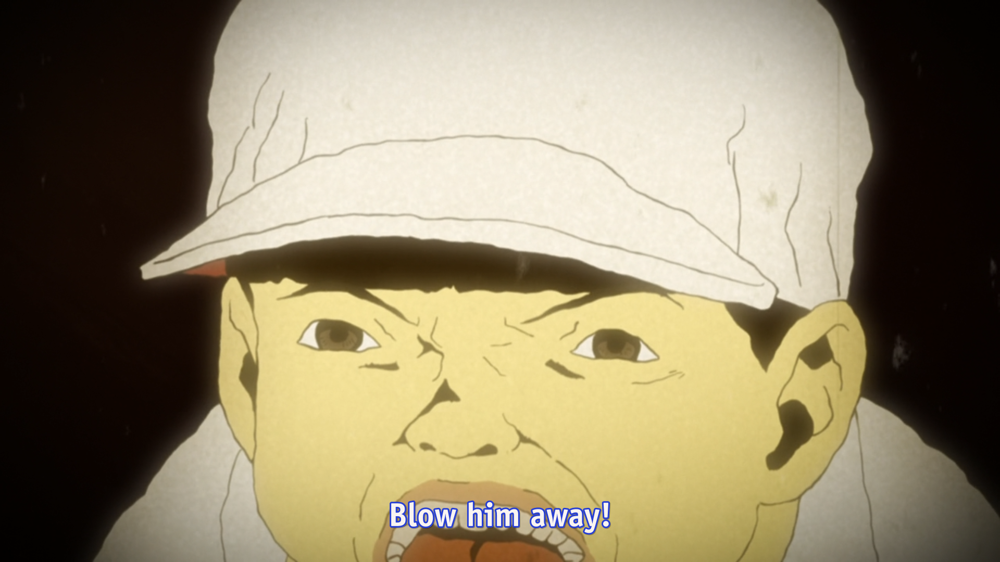
Near the end, you see the video game Smile's been playing abandoned on the stairs he was sitting on - he doesn't need the fake version of the hero vs robot story any longer, since Peco's awakening allows him to finally experience it himself.
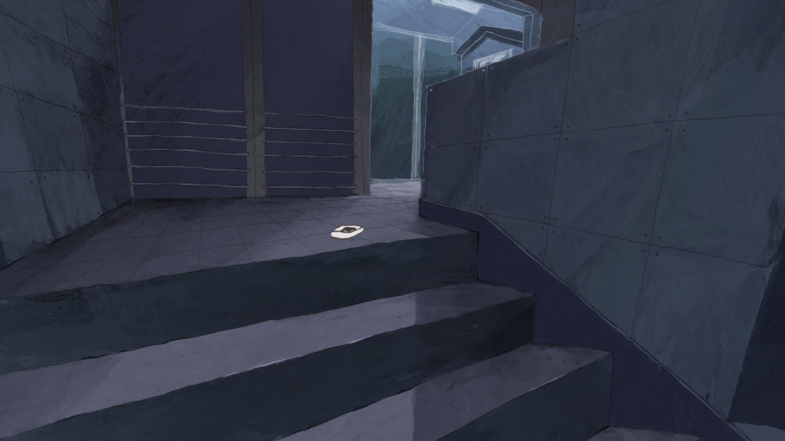
The Past, the Future, and the Chinese National Team
Kong's struggle during the story is one of fear and subverted expectations. Having been spirited away from the Chinese national team, his entire world is transformed to an obsession with winning enough overseas to return home. In a sense, the way Kong acts around Table Tennis is similar to the way you might imagine someone acting after a particularly bad breakup; always profoundly negative, nostalgia-obsessed, highly anxious, and completely unable to focus.
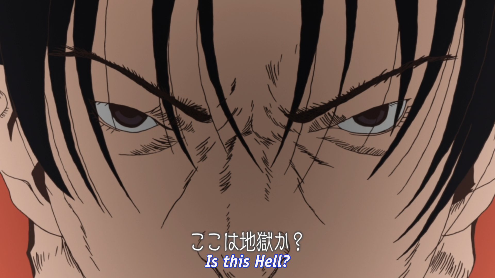
Interesting to note here is Kong's character design - he's loosely based upon two Chinese table tennis players, Kong Linghui and Ma Wenge. The choice of players is no accident. The name "Wenge", or 文革, literally means "Cultural Revolution", a period in Chinese history where the country underwent enormous setbacks by trying and ultimately failing to achieve success in an extremely narrow way (namely, "grassroots socialism"), which mirrors Kong Wenge's struggle to return to China. Kong Linghui's relevance is more literal - Linghui was sent during his youth to Sweden, in order to learn the European style of table tennis. After spending time in Europe, he returned to China and within three years became the world rank number one, becoming the third player to ever achieve a career grand slam (winning at the Olympics, the World Cup, and the World Championships). The name "Kong Wenge" serves as foreshadowing for his entire character arc - his struggles to adapt to a new culture, his frantic attempt to succeed in a highly specific way, his training away from his homeland, and his eventual success at the Olympics. All just from his name!
As time passes, you notice Kong begin to get more and more attached to his work in Japan. He gets better and better at teaching the other players at his school, and they begin to respect him more after initially treating him as a spectacle. However, Japan is always just a side-gig for Kong - he's always got his return trip home in the back of his mind, almost exclusively thinking about it during nearly every single match. It's not even that Kong can't focus on table tennis - he can't focus on the present at all, his thoughts are consumed by his homesickness.
When he plays Peco in his final match of the show, you notice him finally accept his situation once and for all. The story is not subtle about this – it show's Kong's coach, "CHINA" written proudly on his back, walking away…
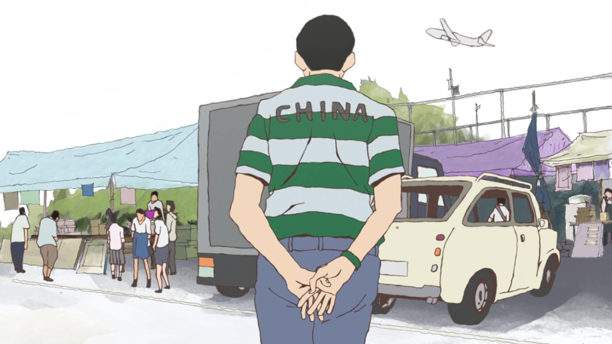
…Silence. A softly colored memory of his mother opening a door, with the words "Finally… You've come home" superimposed…
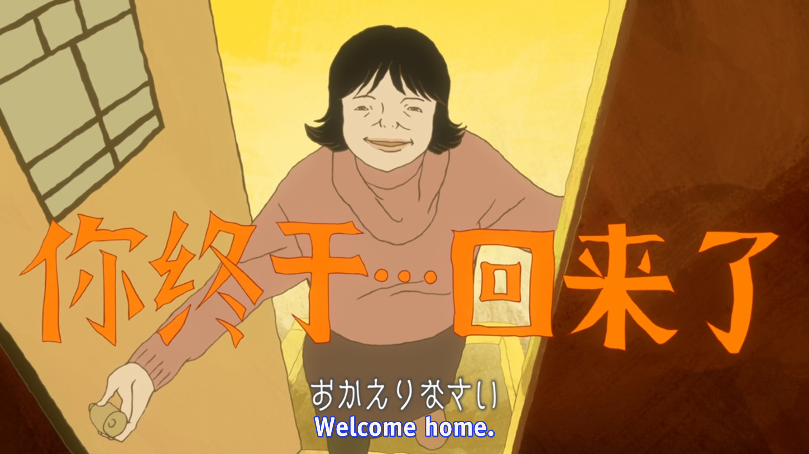
Then a sharp sound, and a jarring jump cut to a white, bouncing ping pong ball, with the word "JAPAN" in starkly contrasting black.
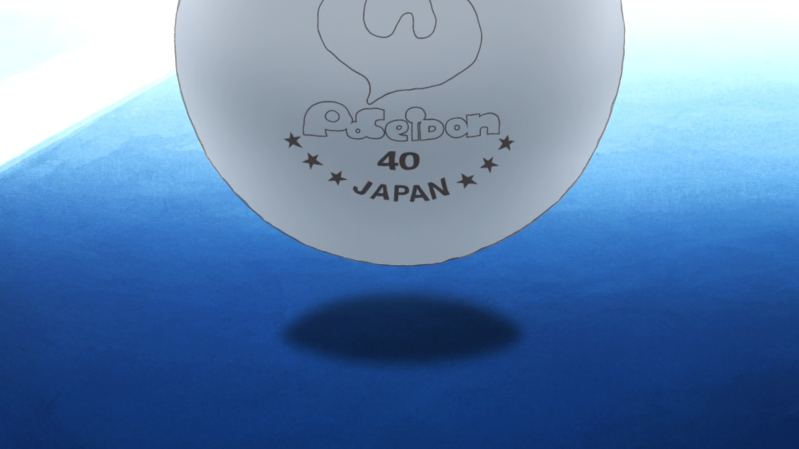
He accepts it, after all this time - Japan is his home now. The image of a plane that has been following him around everywhere takes off and fades into reality, leaving behind a smiling Kong and a victorious Peco.
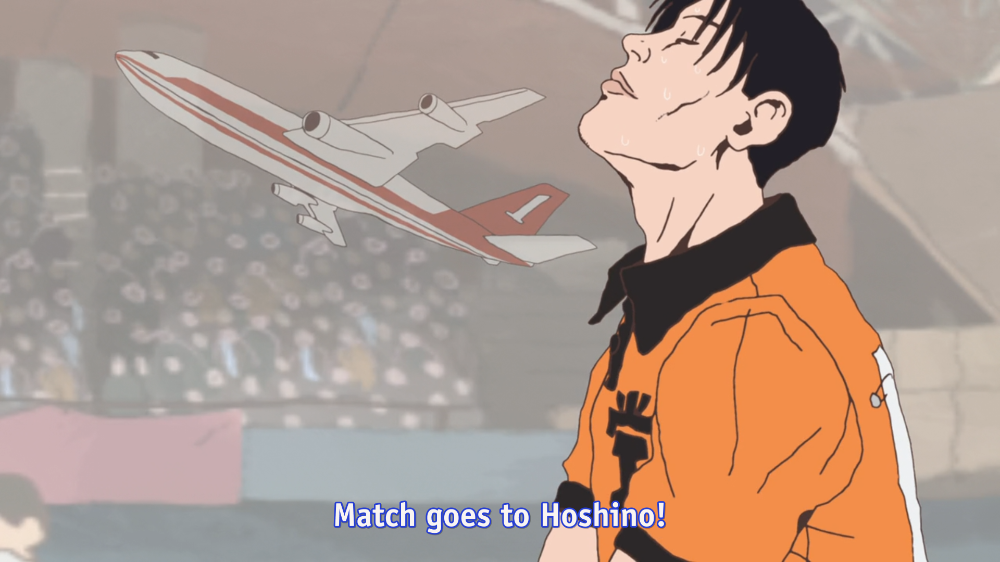
In the epilogue, it's found that Kong manages to find great success, having been naturalized and selected to play for Japan in the Olympics. Once he abandoned his anxieties about his past, he was able to overcome them and allow success to come to him in a more straightforward way. Kong was wrapped up in a specific type of success: win in Japan, return home, make the Chinese national team. Once he accepted his current situation, he was able to travel the path of success that was available to him, rather than trying to "win" with such a narrow definition of things that count as "winning" at all.
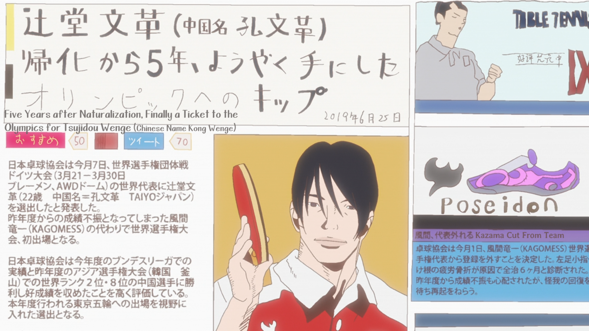
The Talentless Ping Pong Ronin
Sakuma is a particularly puzzling character, one that was hard for the western audience to really grasp super well. I think a lot of this has to do with the cultural association of Sakuma (and, more broadly, with Kaiou) with the samurai that was mostly lost in the west.
Sakuma's entire world revolves around table tennis, and his attitude towards his team holds some remarkable similarities to Bushido, the Samurai way of life. This is no more apparent than when he travels to play Smile, and he has a short conversation with Koizumi:
"They're like the Shinsengumi. You don't have Kondou Isami's permission?"
"I didn't even tell Hijikata I was coming."
"So you're prepared to commit seppuku."
Sakuma's character relies heavily upon the cultural icon of Samurai, and the virtues typically associated with them. Sakuma is heavily invested in Kaiou, and his relationship with the other players on his team is a fiercely loyal one - Sanada and the others typically come to his defense, whereas Kazama is typically indifferent towards him. He reveres Kazama and works constantly to be better at table tennis, unrelentingly dedicated at all times.
Despite this, Sakuma seems fated to "die", as it were, from the start, and his story plays with the ideas of shame and honorable suicide, both strongly associated with the Samurai. Tsunetomo talks briefly about this in Hagakure, where he outlines his thoughts on bushido and claims that "the way of the warrior is death," - that Samurai should be prepared to die at any moment, in order to be truly loyal to their lord. Imagery surrounding Sakuma seems to suggest that he shares a similar belief about table tennis and Kaiou academy - when he leaves to challenge Smile he's drawn as a Samurai, with the Kotsuzumi playing in the background, an instrument typically associated with Kabuki.
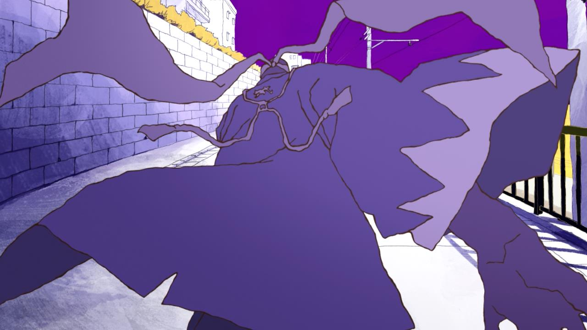
When Sanada tries to talk to Kazama about him, Sanada makes an offhand comment: "He's the type that would play with appendicitis. The posters he has in his room ain't funny to me."
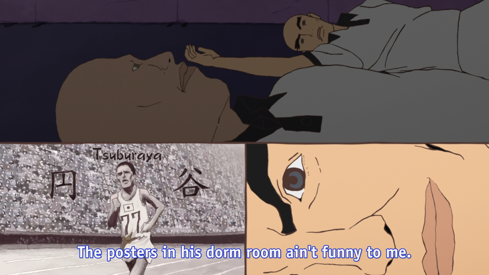
The poster that's shown is of Koukichi Tsuburaya, a Japanese Marathoner that killed himself four years after being passed in the final stretch of the Olympics, injured and unable to live with the shame. They found his body clutching his bronze medal. The poster in his room of this athlete is disturbing to Sanada, and serves as a cue that Sakuma is "prepared to die" for table tennis.
And indeed he does - when Kazama says that Kaiou needs "players on the level of Tsukimoto of Katase", he's more or less denouncing Sakuma, who's assumed to be one of the weaker players of Kaiou due to his lack of natural talent. Kazama even instructs Sakuma to help recruit Smile, saying "next year will be hard if I'm the only good player on the team" (directly telling Sakuma he is not a good player). From Sakuma's perspective, Smile joining Kaiou would mean him being removed anyways, so he goes to Katase more or less to seek an honorable death in battle.
After getting kicked off the team, Sakuma simply goes on with his life in a new direction, and seems to find a lot of happiness with it by the end of the story. He finds a way through life that doesn't involve competition and as such can see table tennis for what it is, rather than what he wants it to be.
"It let me see clearly, too."
"See clearly?"
"Sights you can only see when competition's not a factor."
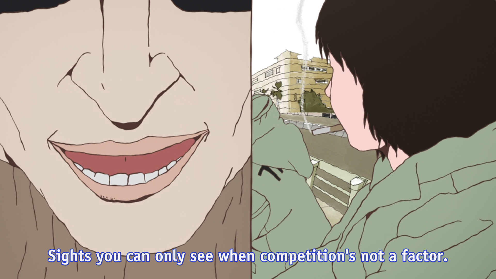
Sakuma ends up perfectly happy by the end of the story, but it leaves a bad taste in a lot of viewers' mouths because his happiness doesn't come from success at table tennis whatsoever. He still gets to play whenever he feels like it, with a style better suited to him, but Sakuma's life after getting kicked off the team is one with no space for playing table tennis in competitions.
It clashes with the typical feel-good narratives of most other sports anime, where nearly every character in every show eventually finds some degree of success. Sakuma, in contrast, actually fails, just like everyone in PPTA does at one point or another. But Sakuma ultimately finds happiness outside of the game altogether - happiness that is just as real as Peco's or Kong's.
"Not all birds can fly."
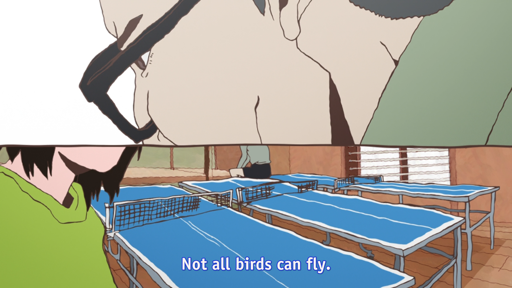
Life, Death, and Poseidon
In terms of Ping Pong The Animation's art style, Kazama's entire existence is literally colorless. You'll notice that things around Kazama are almost always either black, white, or purple, the former two usually functioning as emptiness and the latter usually being the focus of the shot. Kazama's playstyle, and his entire narrative, is one that revolves around blackness, emptiness, soullessness. Everything is exaggerated, dramatic, and for lack of a better word scary. Why might Kazama's art direction clash so heavily with the other characters'?
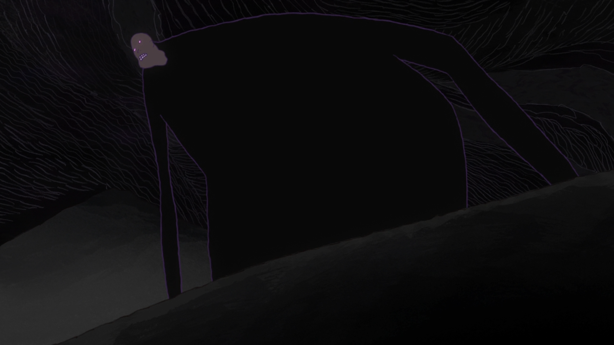 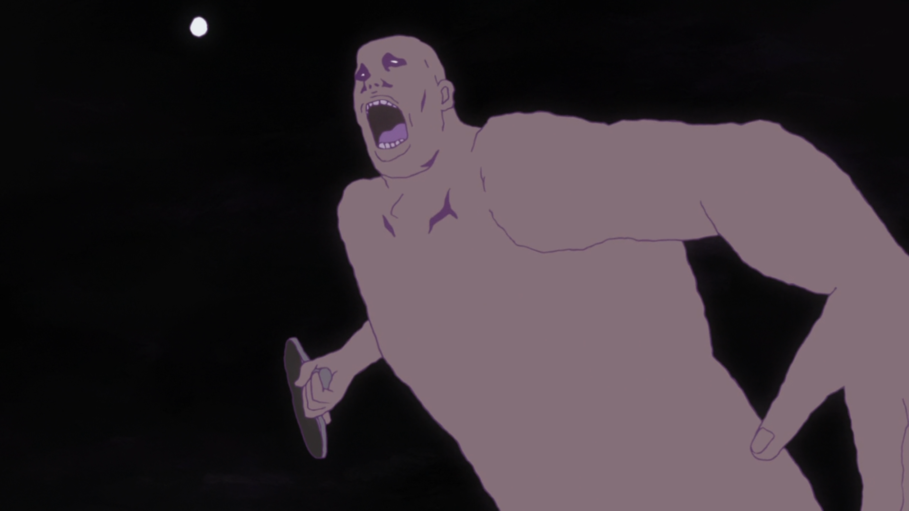 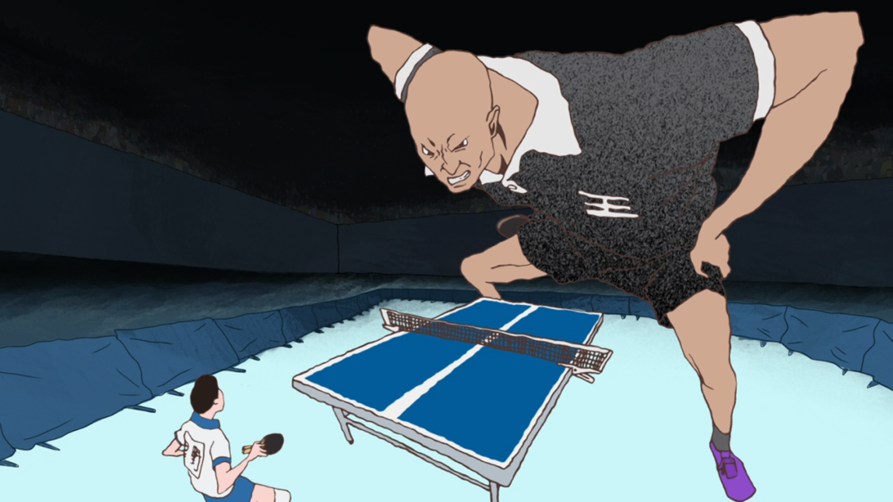 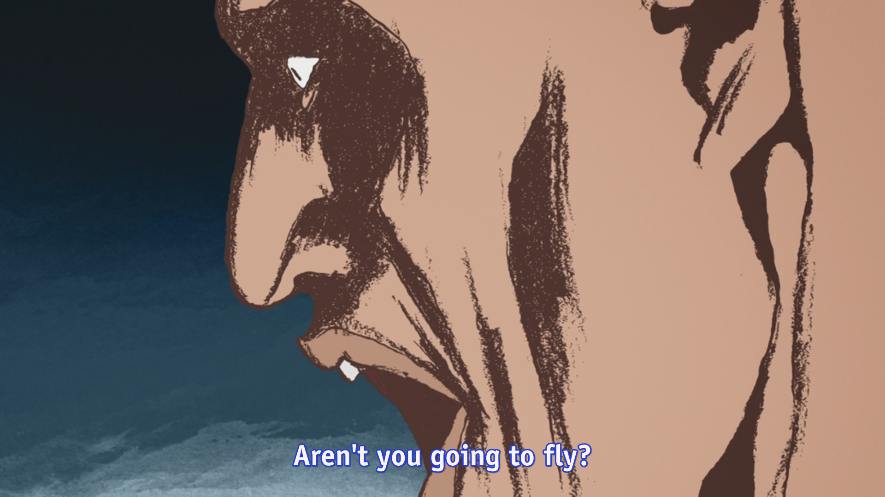
Kazama's character is fundamentally tied to the idea of life vs death, and in this sense Kazama is the "heaviest" character with the most serious issues surrounding him. It's heavily implied that Kazama's father killed himself due to failures in his business, and Kazama's philosophy surrounding Ping Pong are grounded in this fear of failure that, quite literally, took his father's life away from him. This, too, is not very subtle. The phrase "Defeat is Death" is repeated more than once, surrounding only Kazama's narrative.
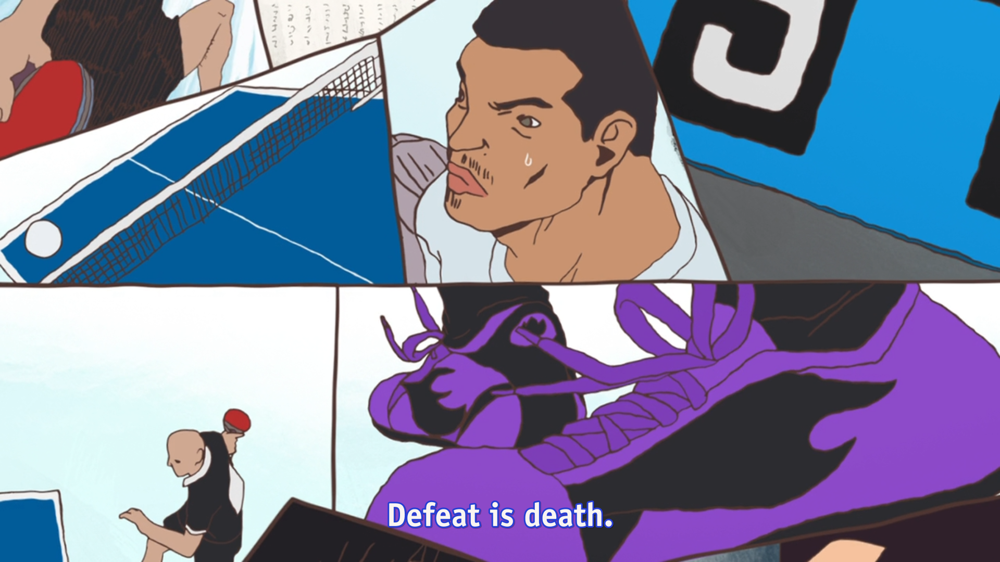
Kazama's attitude towards winning is, therefore, one completely and utterly devoid of joy. This contrasts so strongly with Smile's haphazard, almost uninterested attitude towards winning and losing, and the two clash early on in the story (claiming that the other's philosophy disgusts them). Kazama's fear of defeat, and by extension fear of death, are so all-consuming that the entire experience is "nothing but pain for him".
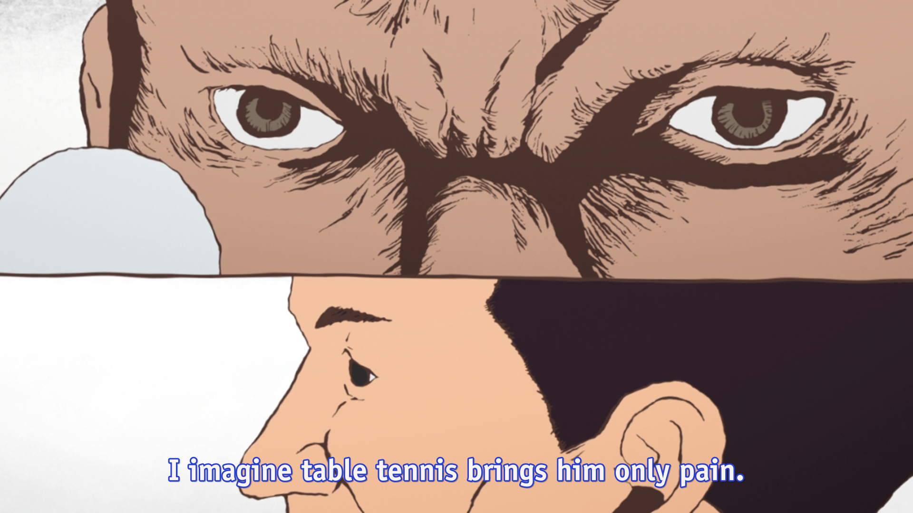
This ends up being something that Kazama overcomes, allowing him to truly enjoy the game, being able to accept defeat without anxiety. Herrigel speaks a bit about this in Zen in the Art of Archery, saying "Years of unceasing meditation have taught [the swordmaster] that life and death are at bottom the same and belong to the same stratum of fact. He no longer knows what fear of life and terror of death are. He lives - and this is thoroughly characteristic of Zen - happily enough in the world, but ready at any time to quit it without being in the least disturbed by the thought of death" (p.58). With this in mind, Kazama's match with Peco in Episode 10 become more consistent with abandoning this fear, with the match turning from his own reaffirmation about the terror of defeat to his becoming enraptured with the joy of being.
Specifically, you see it happen extremely gradually with the color scheme in every frame becoming further and further from the typical darkness surrounding Kazama's matches, until it's nothing but white dominating the entire shot
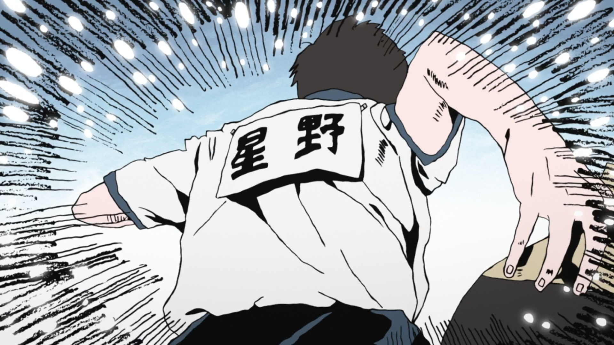 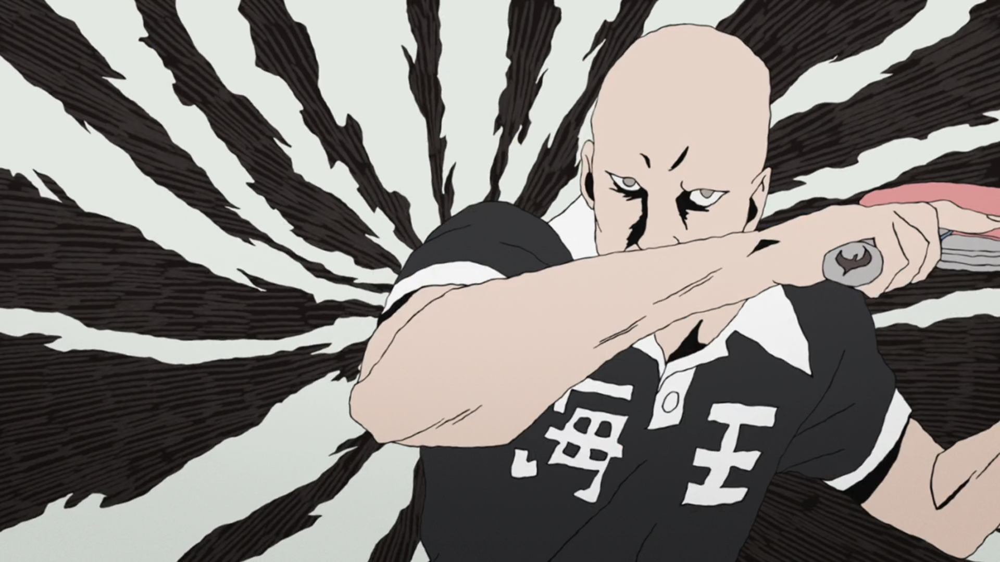
Notice the white breaking through the black here
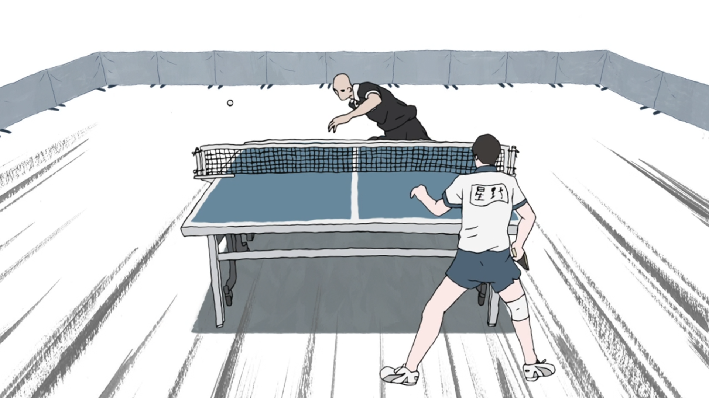 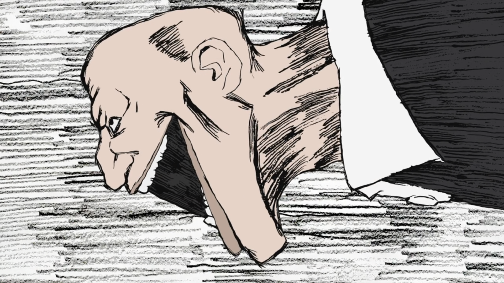
much less black here
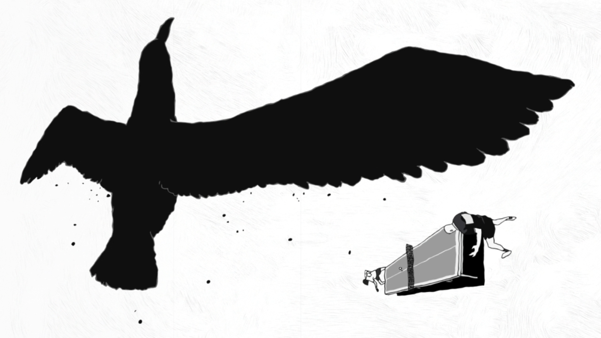 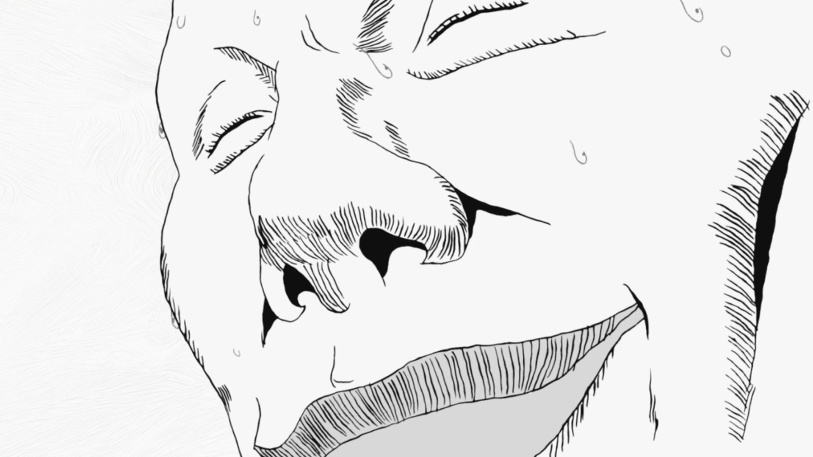
The art is used to express the slow, dramatic emotional transformation that happens as the set progresses, and by the end of it Kazama is the happiest he's ever been playing table tennis.
"All of my cells are singing with joy."
"My focus blocks out the outside world."
"I don't have time to be afraid."
"I feel no anxiety. I like this place. It's glorious."
Conclusion
If this were not a story with intentional reference to entire disciplines of East Asian philosophy, then it's a wonderful vehicle for exploring them anyways, and this writing should serve as praise both for the applicability of the philosophical concepts and for the raw truth captured in the story of Ping Pong The Animation.
There are ideas to be learned from each character's unique struggles, and becoming overly attached to any one character should strike you as weirdly antithetical to the point of the whole show. We should seek to see ourselves in Peco, a person dedicated to the pursuit of enlightened mastery. We should seek to see ourselves in Smile, a person now able to wander through life, appreciating the world, blood flowing through their veins. We should seek to see ourselves in Kong, accepting ourselves and our environment. In Kazama, an abandoning of the fear of defeat and loss. In Sakuma, an acknowledgement of where we belong. All of their struggles should feel familiar to us, and all their destinations feel achievable by us.
Anyone with experience competing at things could probably relate to almost every emotion portrayed by all the characters in this show. Some characters resonate with certain people more strongly, but only insofar as much as those emotions dominate their lives. The great thing about Ping Pong is how profoundly relatable it is, how really right they captured the experience of competition.
We are all the characters, all at once. And we are all alive.
Misc Notes, errata
Note that I am not at all an expert in East Asian philosophy in any capacity, nor am I the most experienced critic (I merely read a few books on Zen and saw parallels with this show that I really liked). If I got anything very wrong about Zen, Daoism, or anything else philosophical, feel free to tell me! I'll list corrections in this section along with your desired name to credit (or anonymously, if you would prefer).
Things left to do:
- Read more in general about Zen / Daoism in general
- Read the source material for PPTA (that is, the manga)
- Look for interviews with PPTA's director and Ping Pong's mangaka
- Flesh out some of the weaker sections
- Get more screenshots where appropriate
- Maybe rewatch this a few more times to keep finding details that I missed
References
- Ping Pong: The Animation
- Zen in the Art of Archery
- Zen and Japanese Culture
posted on 5/2/2017